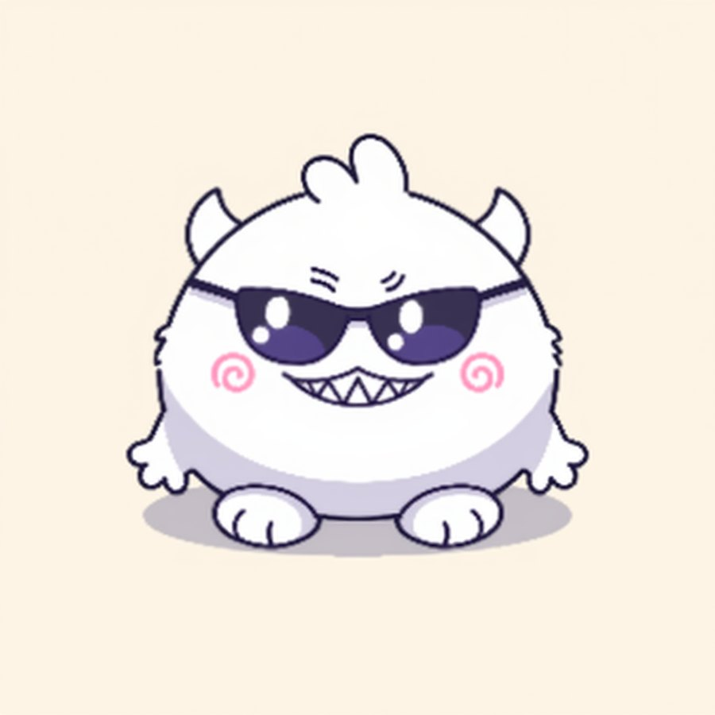
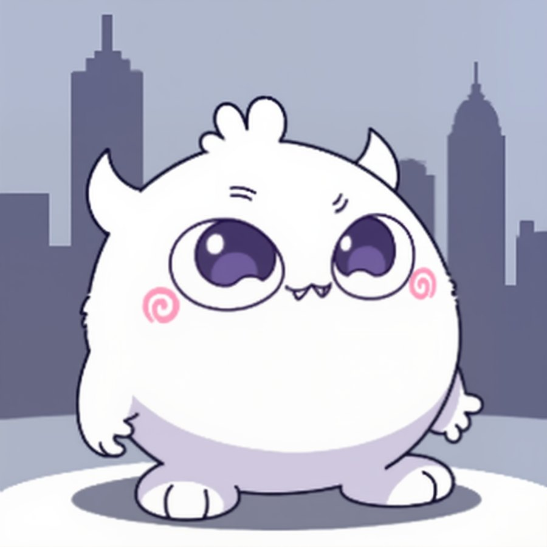
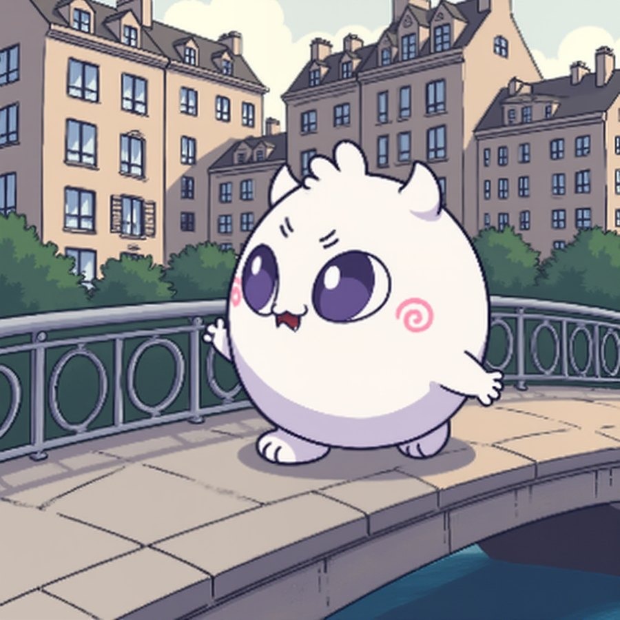
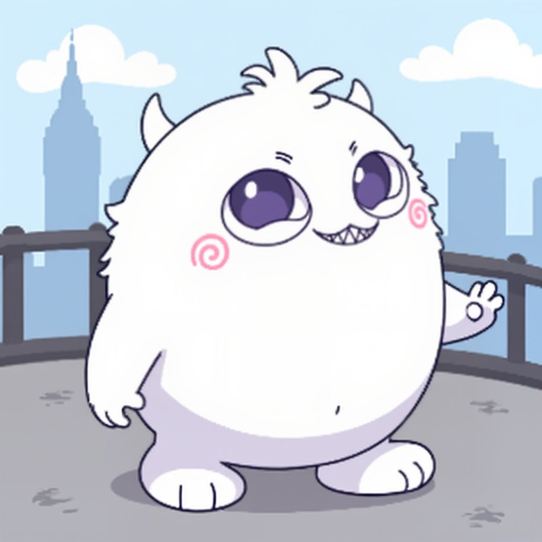

Storyboards
Every drone show I design starts as a storyboard. A brief comes in, and I turn it into a sequence: a cue sheet timed to the soundtrack, then one panel per element showing what the audience sees and how it moves. Those boards are what the client reviews and approves, round by round, before a single drone is programmed.
I've boarded shows for stadiums, city celebrations and festivals. Around twenty in 2026 alone, several in flight at once. Two of them are below, along with character work for DOKIS and an immersive installation from the Texas Immersive Institute.
Drone show storyboards
UT Austin Baseball Flylight · Austin, TX · 2026
The post-game show for a crowd inside the ballpark, with a separate 7th-inning-stretch piece. The board opens on a cue sheet that locks every element to a 30-second slot, then walks through the sequence: the Texas script and flag, Bevo, and a player who steps up, points his bat at the outfield, swings and slides into home. Movement is written into each panel: stop-motion frames for the pitcher, a jersey that turns to reveal “Texas,” a cap waved toward the crowd.


Kipona — Labor Day 300 drones · Harrisburg, PA · 2025
A 12-minute family show over the Susquehanna, timed track by track. The board treats the sky as a character stage: cat eyes that blink and follow the viewer, a UFO beaming up a cow, an astronaut who drifts through space and lands on a planet, disco dancers in stop motion. Each panel carries its own direction note, and the deck ends with extra ideas the client could swap in, like a T-Rex that roars toward the audience.


Character & concept
DOKIS Art Production Manager · 2025
I created concepts for designers based across the globe to build from: the DOKIS characters placed in new settings and situations, like a hockey rink, a city skyline, a bridge at dusk, or a new attitude. The team developed them into finished art that went out on DOKIS's socials. I also reviewed what the team produced to keep it on-model and on-brand, and set up a ComfyUI pipeline trained on the characters so new concepts could be turned around quickly.




Vox Temporis — Interactive Emmy Wall Texas Immersive Institute · UT Austin · 2024
An immersive installation telling the story of UT Austin's Emmy winners and its long history in entertainment. The centrepiece was “Phil,” an old film projector that Sam and I turned into a talking guide. A voice bot inside it tells visitors the history, and a tablet built into its side door shows the photos to go with it. I designed the space in 3D, from the first podium-and-TV mockups to the final retro-futuristic lounge, and planned the build: trusses that hide the projectors, LED “wires” along the walls, and a midi-controller remote.


The brain. A light-up brain sculpture that changes colour as your hand passes over it, read by a hand-tracking sensor. I built it over Thanksgiving break, and it's my favourite thing I made at TXI.